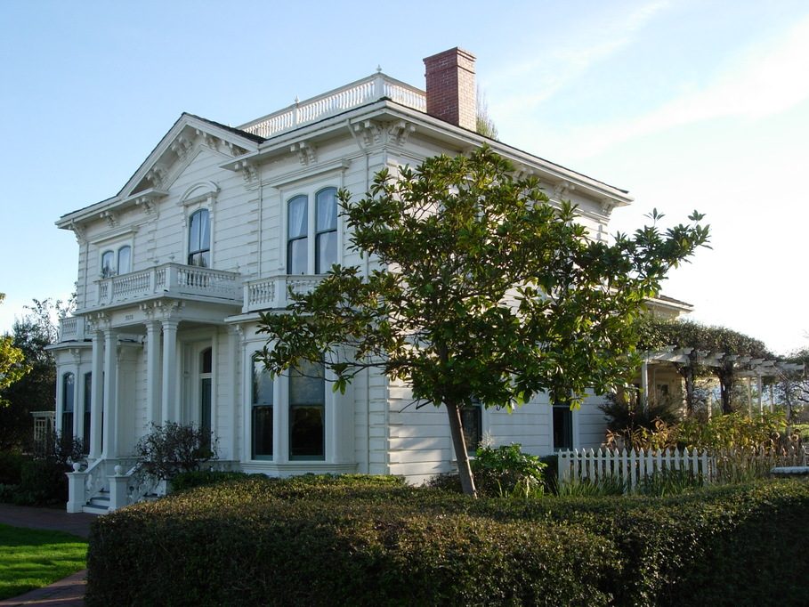

View Map
The Rengstorff House
One of the oldest houses in the Bay Area, the Rengstorff House is an Italianate mansion
built by Henry Rengstorff, a prominent trader in the Bay Area and immigrant from Germany.
After staying in the family for several generations, the house fell into ruin before the
city of Mountain View bought and restored the house in the 1980s. While Joe lived in
Mountain View, he and Sin came here often on walks to see the house, the bay and the
beautiful wetlands nearby.
Our wedding will be outdoors in the gardens surrounding the Rengstorff House.
It can get chilly when the sun goes down, so you may want to bring a hat,
a wrap, or even a light scarf!
The wedding ceremony will be in the late afternoon, followed by a cocktail reception
and a light dinner. Exact times will be included in invitations and posted here nearer to the wedding date.
Your presence at our wedding is all the gift we could ask for! If you'd like to give an additional gift, we'd love it if you donated to Heifer International in our names.
Travel & Accomodations
Travel
If you're flying:
The Bay Area has three major airports. We recommend you fly to either San Francisco or San Jose International, but Oakland International is also nearby.
Accomodations
We are blocking out rooms in a few nearby hotels and will provide details for making reservations in early February. We'll also have some shuttle buses between the hotels and the Rengstorff House so you can feel free to enjoy your night with us without worrying about making transportation arrangements.